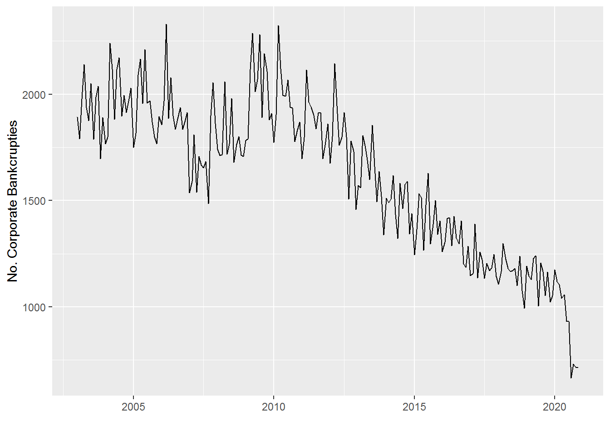

In the following, we will have a closer look at the time series of monthly corporate bankcrupties in Germany between January 2003 and November 2020. The corresponding raw data can be obtained from the website of the Federal Statistical Office of Germany (the dataset has the reference code 52411-0004). data contains the monthly time series data of corporate bankcrupties after having conducted some minor pre-processing (e.g. adjusting the time format).
library(ggfortify)First, we will convert the data on the monthly number of corporate bankcrupties into a ts-object and plot the time series.
# creating a ts-object
data_ts <- ts( data$NoCorpBankcrupties, start = c(2003,01), frequency = 12)
# plotting the ts-object
autoplot(data_ts, ylab="No. Corporate Bankcrupties")
Looking at the plot, we find the following concerning the level of corporate bankruptcies:
During the first quarter of 2020 Germany was hit by Covid-19. In response to rising infections, the government decided to take a set of far-reaching measures such as closing schools, bars, restaurants and shops. These measures caused a large drop in revenues and profits for many companies. Under such circumstances one would usually expect to see a spike in corporate bankcrupties. However, in order to prevent such a spike in corporate bankcrupties which could trigger a negative domino effect the German Government “offered respite to companies that find themselves in financial trouble due to the pandemic by allowing them to delay filing for bankruptcy” (Thomson Reuters). This is the reason, why we observed a sharp decline in the corporate bankcrupties in Germany in 2020 as described above.
The purpose of our analysis is twofold:
# plot(diff(data_ts))
#
# forecast::Acf(diff(data_ts))
#
#
# plot(data_ts[-(1:200)])
#
# library(ggfortify)
# autoplot(data_ts)
#
# forecast::Pacf(data_ts)
# forecast::Acf(data_ts)
#
#
# a <- forecast::auto.arima(data_ts)
#
# summary(a)
#
# summary(lm(as.numeric(data_ts)~a$fitted))
#
#
# plot(a)